How do I create and manage a project?
Projects keep related photos, locations, and information together. You can create a project, save captured photos to it, view its details, and export or manage it whenever needed.
Step 1: Open Projects
Open the Projects tab and tap New Project.
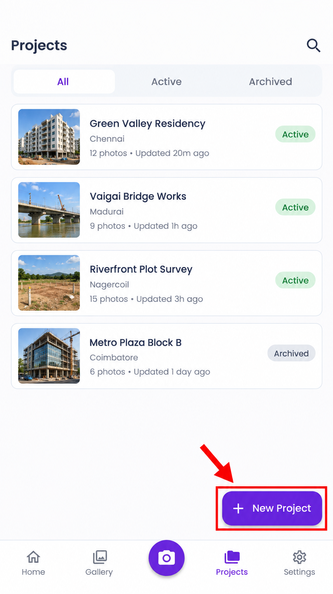
Step 2: Enter project details
Add a cover image and enter the project name, code, client, location, and description.
Choose a project colour, then tap Create Project.
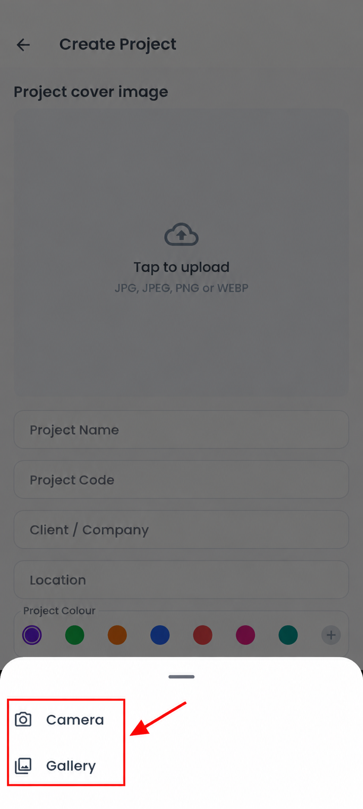
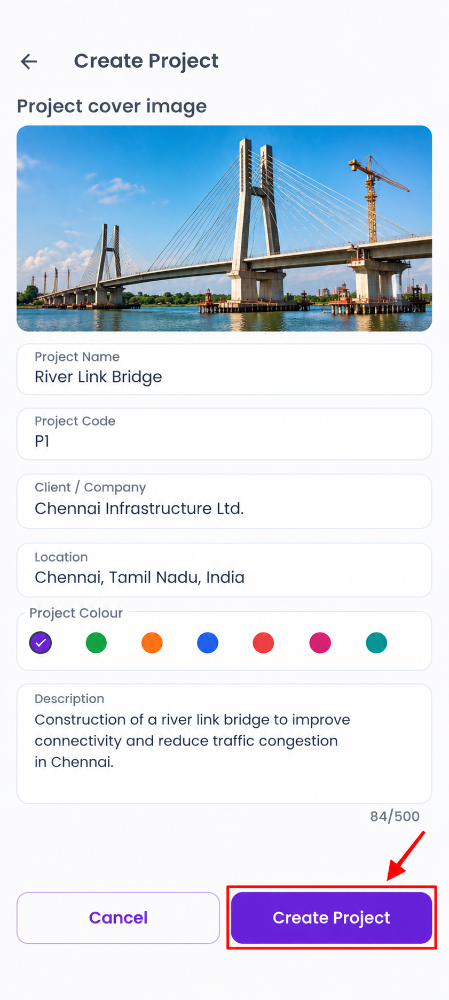
Step 3: Project created
Your new project is created and ready to store captured photos.
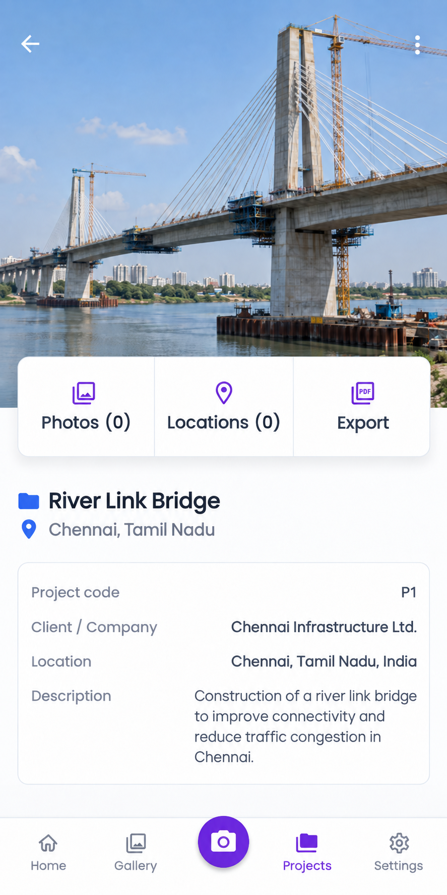
Step 4: Choose where to save the photo
After capturing a photo, tap Save Photo.
Choose Device Gallery or Project Folder as the saving location.
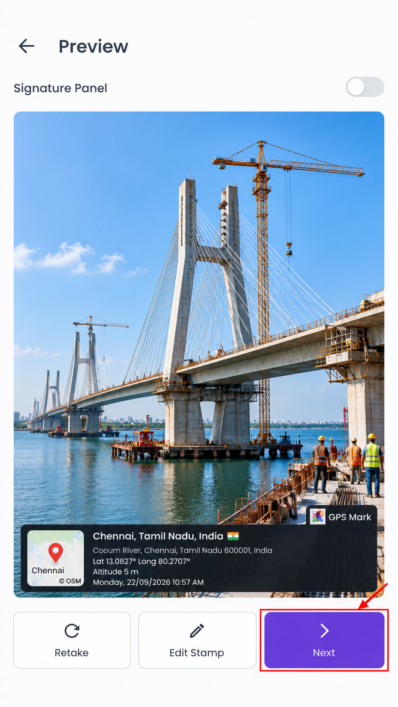
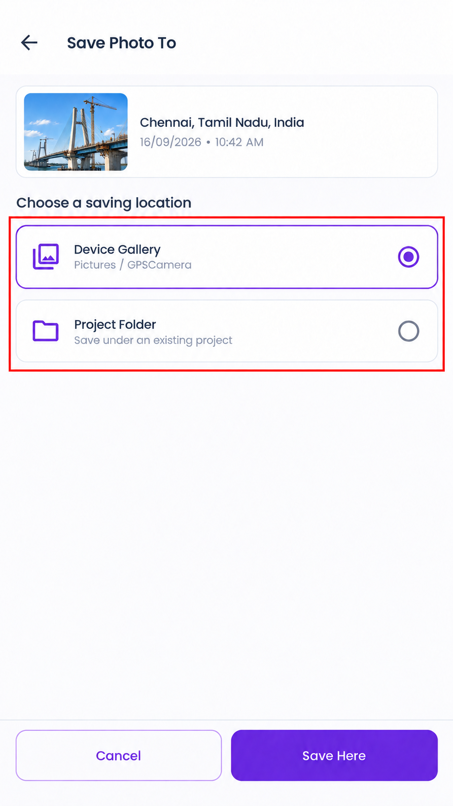
Step 5: Select or create a project
Select an existing project and tap Save Here.
You can also tap Create New Project and save the photo to the new project.
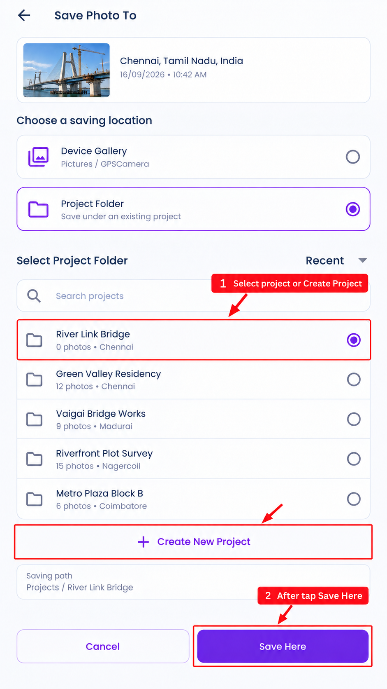

Step 6: Open and view the project
Open a project to view its details, saved photos, captured locations, map, and project information.
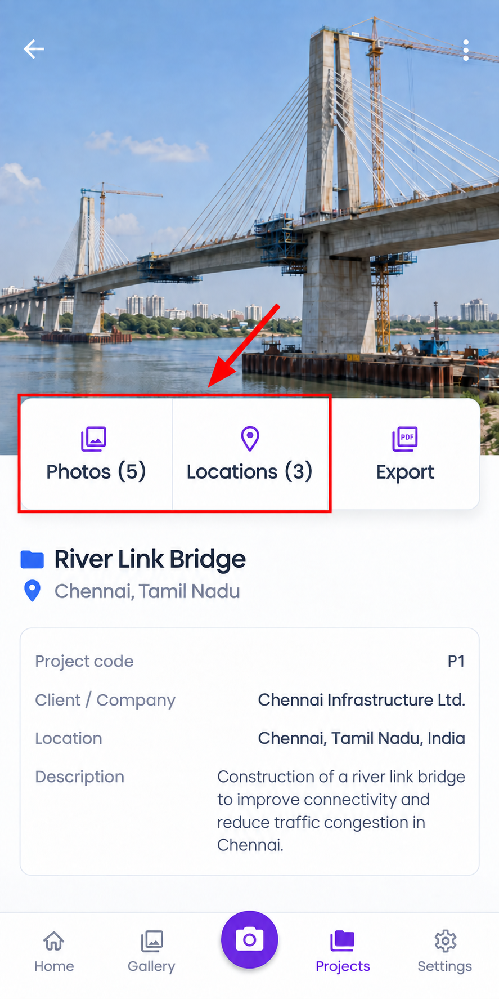
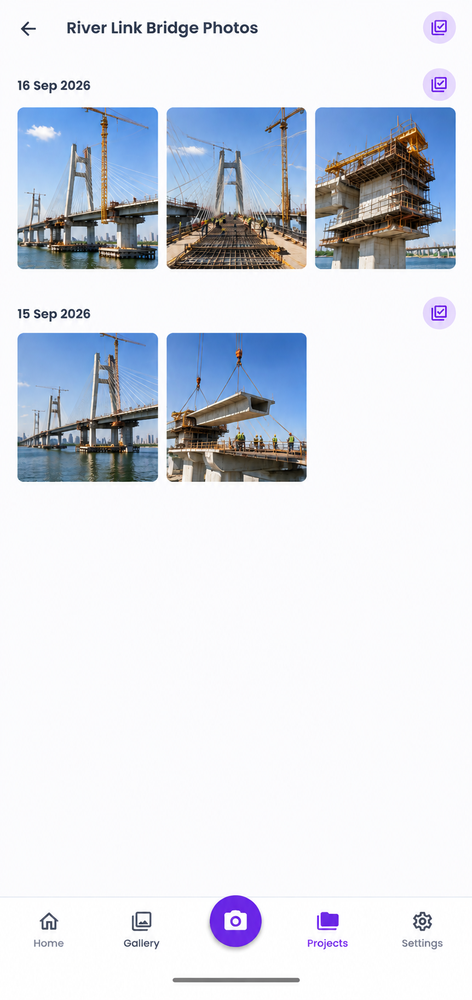
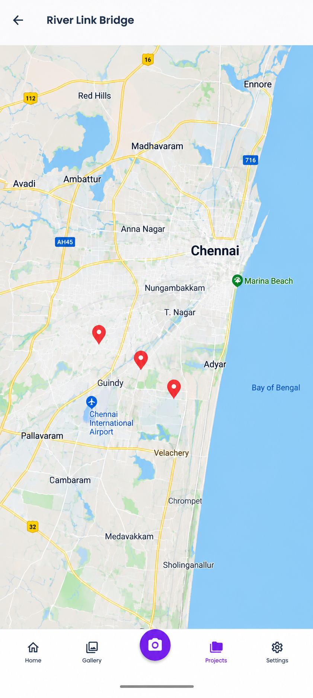

Step 7: Export the project
Tap Export to create a PDF report containing the project details and photos.
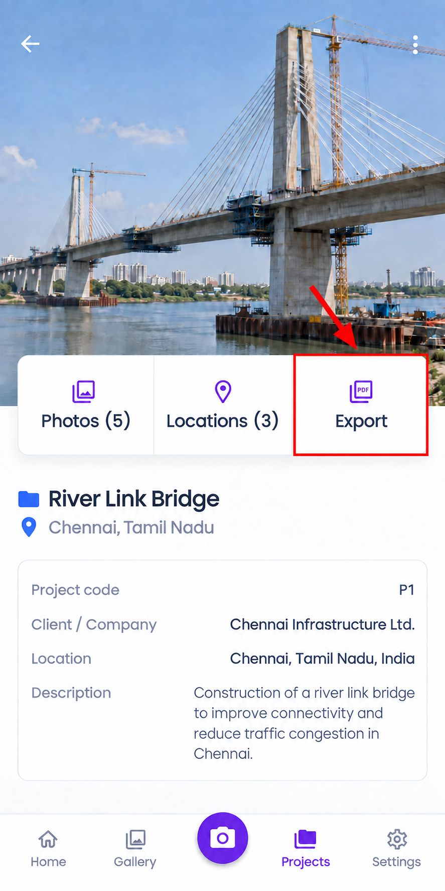
Step 8: Edit, archive, or delete
Open the project menu to edit the project, archive or restore it, or permanently delete it.
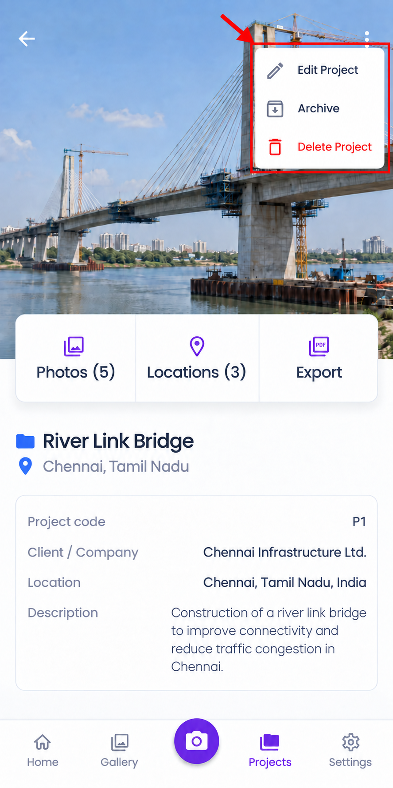